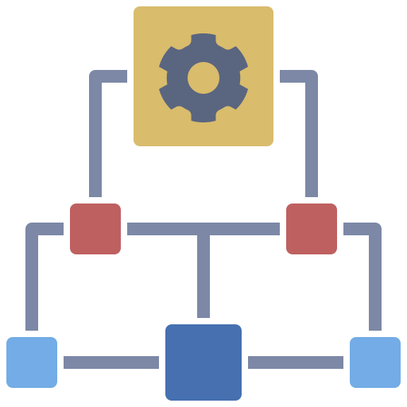

|
Com as Configurações Comuns de Módulos, podemos definir a disponibilidades para visualização de uma atividade ou recurso, além de pré-definir como se comportarão os grupos e agrupamentos da sala virtual. |
A Conclusão de Atividades, serve tanto para visualização e controle por parte dos alunos, assim como para permitir a configuração de restrições baseado na conclusão de uma atividade anterior. |
|
As restrições servem para limitar quem, ou quando, pode ser acessada uma atividade ou bloco em específico. Algumas restrições exigem que uma Conclusão de Atividade, grupo ou agrupamento tenham sidos configurados. |
Grupo de Restrições
Além de restrições separadas, podemos criar grupos de restrições. Aplicando uma lógica complexa que irá definir quem pode acessar determinado conteúdo. Baseado na aprovação ou reprovação de determinado conteúdo, participação de algum grupo ou limitado por nota recebida.

|
|
Vídeo Tutorial de Configuração e Aplicabilidade: |
Dicas de UsoAlém de ser utilizada para restrições, a conclusão de atividade pode ser usada para que os estudantes controlem quais atividades já realizaram.
Restrições podem ser usadas para que estudantes que não atingiram uma nota mínima em uma atividade, acessem uma recuperação, evitando o acesso daqueles que já possuem a nota requerida. Com as Restriçóes também é possível configurar uma data ou horário de disponibilização de atividades ou conteúdos. |